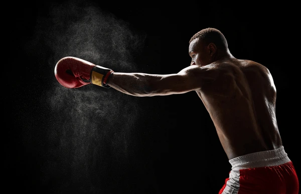
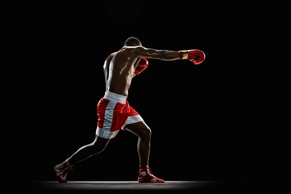
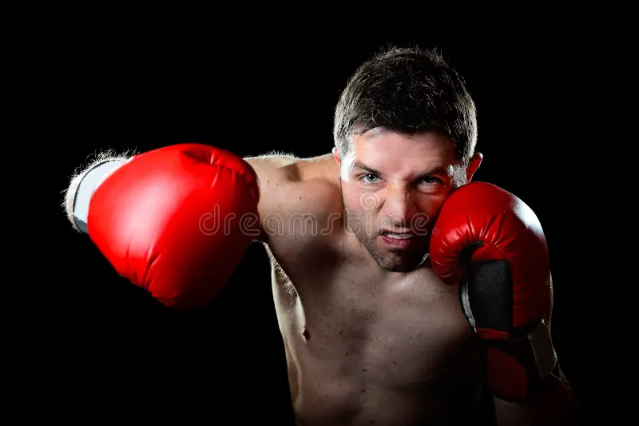
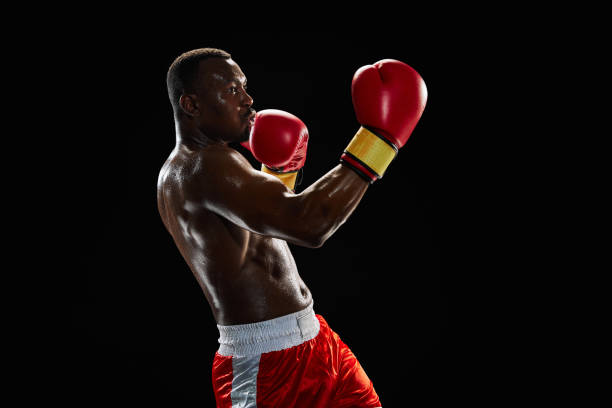

Boxing starts with mastering the basics: stance, footwork, and punches. Every champion begins here.

Jab: A fast, straight punch thrown with the lead hand. It’s mainly used to control distance, keep the opponent busy, and set up combinations rather than to deal heavy damage.

Cross: A straight punch thrown with the rear hand. It’s more powerful than the jab because it involves rotating the hips and shoulders, and it’s often used as a follow-up to the jab.

Hook: A short, tight punch thrown in a curved motion with the elbow bent. It targets the side of the opponent’s head or body and generates power through hip rotation and proper body positioning.

Uppercut: A vertical punch that travels upward, usually thrown at close range. It uses leg drive and hip movement to lift the fist toward the opponent’s chin or body, making it effective in tight exchanges.
Move lightly stay balanced to control distance and avoid punches. Keep your guard up, slip punches, block, and move your head. Gloves, hand wraps, and a mouthguard are essential for safe training. Focus on technique first, warm up properly, stay consistent, and listen to your body.
Every champion starts at the beginning. Stay consistent, master the basics, and never stop improving. Every drop of sweat brings you closer to strength, speed, and confidence in the ring. Keep pushing — your dedication will define your success.